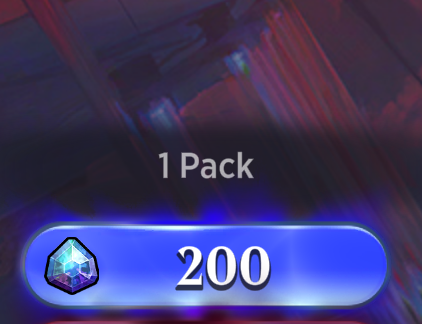
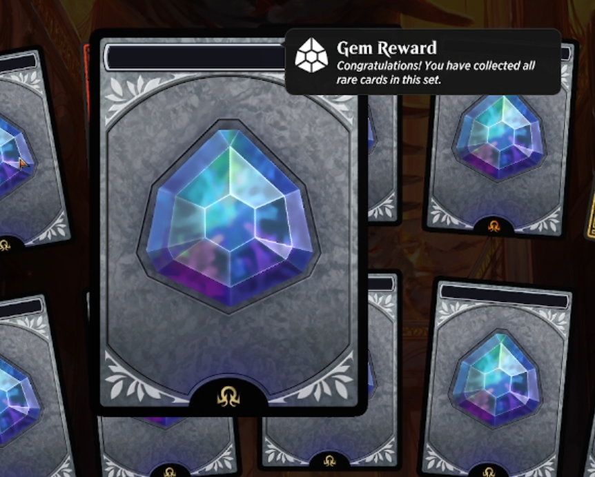

With a little bit of math, decompilation, and understanding of computer architecture, we are going to force a user-controlled arithmetic overflow to occur in Magic: The Gathering Arena, and use it to buy millions of card packs for "free" (only using the starting amount of in-game currency given to new accounts).
But the millions of dollars worth of digital cards isn't the reward here. The reward, hopefully, is knowledge.
Tell 'em Tai:
Digital trading card games have put nerds in a bind. With physical TCGs, we used to be able to convince our life partners, and ourselves, that in some vague way we were really "investing" in collectibles that could be liquidated if needed. In recent years, though, digital card games like Hearthstone and its ilk have laid the facts bare for all to see: us card-game nerds are just gambling addicts with extra steps. It is about the rush of opening the packs, baby! Not ownership of the cards.
Games like Magic: The Gathering Arena (MTGA) and Hearthstone are still massively popular and huge financial successes without any illusion of scarcity or value in a secondary market. The cards "owned" and "opened" by each account are all just numbers in a database somewhere. That change in ownership model is a double-edged sword though. We nerds can change numbers in a database much more easily than we can rob a board game shop. So, let's take advantage of that!
MTGA is a Unity game, meaning that it is written in C#. C# decompiles extremely cleanly, making reverse engineering and manipulating the game logic a breeze. I covered this in more of a how-to format in my last post, so I will skip it here and just get to the interesting part. Looking at the purchasing logic for in-game store items, the following function is used by the game to submit a purchase request using in-game currency:
...
// PurchaseV2Req is essentially a JSON dictionary that later
// gets marshalled and sent to the game server to make a purchase
PurchaseV2Req purchaseV2Req = new PurchaseV2Req();
purchaseV2Req.listingId = item.PurchasingId;
// IMPORTANT LINE 1 - Sets quantity being ordered
purchaseV2Req.purchaseQty = quantity;
purchaseV2Req.payType = Mercantile.ToAwsPurchaseCurrency(paymentType, this._platform);
Client_PurchaseOption client_PurchaseOption = item.PurchaseOptions.FirstOrDefault(
(Client_PurchaseOption po) => po.CurrencyType == paymentType);
// IMPORTANT LINE 2 - Calculates cost of order
purchaseV2Req.currencyQty = (
(client_PurchaseOption != null) ? client_PurchaseOption.IntegerCost : 0) * quantity;
purchaseV2Req.customTokenId = customTokenId;
PurchaseV2Req request = purchaseV2Req;
...
}
When I took a look at this, it stood out to me that a request to purchase something from the store includes both the quantity being ordered and a calculated price of what the order should cost. What's more, the price is calculated by the client(!) by multiplying the unit price of whatever is being purchased by the quantity being ordered. If that second important line is confusing to you, here it is in a more readable way:
if (client_PurchaseOption != null) {
purchaseV2Req.currencyQty = client_PurchaseOption.IntegerCost * quantity;
} else {
purchaseV2Req.currencyQty = 0 * quantity;
}
Seeing a client-side price calculation, I began the classic QA-engineer-beer-ordering workflow:
A QA engineer walks into a bar. Orders a beer. Orders 0 beers. Orders 99999999999 beers. Orders a lizard. Orders -1 beers. Orders a ueicbksjdhd.
— Brenan Keller (@brenankeller) November 30, 2018
First real customer walks in and asks where the bathroom is. The bar bursts into flames, killing everyone.
First I tried messing with the purchaseQty field by setting it to a negative number, just to see if there was any weird behavior there. My hope was that the logic for deducting a payment from my account serverside would look something like this:
accountBalance -= client_PurchaseOption.IntegerCost * quantity
If I purchased -1 card packs from the store, at a price of 200 gems (MTGA's in-game currency), purchaseV2Req.currencyQty would equal -200. Subtracting that from my account balance would give me more money!
This did not work. The server checks to make sure that you are ordering a quantity greater than 0, and prevents the purchase from going through if not.
I then tried messing with currencyQty, the calculated price. I thought this was going to be a winner and that I would be able to purchase whatever I wanted for 0 gems. No dice there either. If I tried to change the calculated price, I would get the following error back, due to a mismatch with a price calculation performed server-side:
{
"code": "Store_IncorrectCurrency",
"message": "Failed to purchase listing because currencyQuantity is not equal to calculated price"
}
Ok, weird. That means that the client has to send a correctly calculated price in the purchase order, because the server validates the order by performing its own price calculation. While this left me stumped as to why the client-side calculation even exists, it meant I couldn't just tell the game to give me free cards, or cards at a negative price, or anything else.
But I wasn't ready to give up yet. The fact that I could see the logic of how this price calculation was made allowed me to make some assumptions about the server-side check:
Now that second bullet is a pretty big jump in reasoning, but I was willing to roll with it because it opened up the opportunity to make a purchase that was technically correct, but still let me make out like a bandit.
Arithmetic overflow occurs when the output of an operation is a value bigger than can be stored in the destination data type. It is like chubby bunny, but with bits. In our case, the destination is the int data type.
In C#, an int is represented under the hood as 4 bytes, or 32 bits. In hex, the max value of the 4-byte value is 0xFFFFFFFF, or 11111111111111111111111111111111 in binary.
What happens when you add 1 to 11111111111111111111111111111111?
11111111111111111111111111111111
+ 00000000000000000000000000000001
---------------------------------
100000000000000000000000000000000
It should become 100000000000000000000000000000000, but that is 33 bits - one bit more than what our data type allows. So instead, the most significant bit is dropped, leaving us with 00000000000000000000000000000000. It rolls back over to zero.
Small aside: the int representation of 0xFFFFFFFF is actually -1 in C# due to the use of two's complement to allow the data type to store negative numbers. This means that the overflow kind of works as intended. When you add 1 to -1, both the underlying binary and the int representation zero out. 0x00000000 = 0. But you don't need to worry about that. All you need to know is that if the output of an operation is greater than 0xFFFFFFFF, the output value will essentially be output % 0xFFFFFFFF.
So, with our new knowledge of arithmetic overflows, do you see how we are going to heist our Magic cards? Looking back at this line of code, I see two things:
purchaseV2Req.currencyQty = client_PurchaseOption.IntegerCost * quantity;
Assuming that the server logic is similar to what is done on the client, we should be able to overflow this integer by ordering an astronomically high number of packs. Let's plug some numbers in!
One pack of cards costs 200 gems, and we know the max underlying value is 0xFFFFFFFF. Therefore, we can figure out how many packs we'd need to order to overflow our order price back around past 0, and only pay for the remainder. A Python interpeter will do just fine:
>>> (0xFFFFFFFF/200) + 1 # add one to round up to the nearest int that will overflow
21474837
We add 1 to the quotient to get the largest whole number that will surpass the overflow, since Python always rounds down when casting floats to ints. This means while we are ordering 21 million packs, our payment will be as close to 0 as feasibly possible. Potentially under the price of a single pack!
We could order a number of packs higher than 21474837 as well, but all that is going to do is make the remainder, the price we are going to pay, higher. That is, until you order a number that, when modded with 0xFFFFFFFF, will wrap around to 0 again - which would essentially be around the area of multiples of 21474837.
There's something else I forgot to mention. There's no way to actually submit bulk orders for an arbitrary number of packs in the UI. There's just a big button to buy a pack (and preset quantities of 10, 25, etc):

But that's no problem, now that we know the order quantity needed to perform the overflow, we can just patch our binary with the appropriate opcodes to have the quantity hardcoded into our order! In C# it would look like this:
...
// PurchaseV2Req is essentially a JSON dictionary that later
// gets marshalled and sent to the game server to make a purchase
PurchaseV2Req purchaseV2Req = new PurchaseV2Req();
purchaseV2Req.listingId = item.PurchasingId;
// Important Line 1 - Sets quantity being ordered
purchaseV2Req.purchaseQty = quantity * 21474837;
purchaseV2Req.payType = Mercantile.ToAwsPurchaseCurrency(paymentType, this._platform);
Client_PurchaseOption client_PurchaseOption = item.PurchaseOptions.FirstOrDefault(
(Client_PurchaseOption po) => po.CurrencyType == paymentType);
// Important Line 2 - Calculates cost of order
purchaseV2Req.currencyQty = (
(client_PurchaseOption != null) ? client_PurchaseOption.IntegerCost : 0) * quantity * 21474837;
purchaseV2Req.customTokenId = customTokenId;
PurchaseV2Req request = purchaseV2Req;
...
}
(And in case you're wondering why I didn't just recreate the purchase request in python or something, it is because the shop communication is over some sort of socket. It wasn't just a REST api and it didn't seem worth figuring out.)
So with the binary patched, lets click our button and buy a pack...
Bada-bing, bada-boom. With a single click, over 20 million dollars worth of Magic cards has been deposited to my account (if you calculate the gems-to-dollars exchange rate, a conservative estimate is each pack costs a little over a dollar).
How much did that put us back? Well, we can do the math ourselves:
>>> (200 * 21474837) % 0xFFFFFFFF
105
105 gems! Less than the cost of a single pack. We can check the purchase logs just to be sure though:
{
{
"InventoryInfo": {
"SeqId": 5,
"Changes": [
{
"Source": "MercantilePurchase",
"SourceId": "Packs-KHM-1-Listing",
"InventoryGems": -104,
"InventoryCustomTokens": {},
"ArtStyles": [],
"Avatars": [],
"Sleeves": [],
"Pets": [],
"Emotes": [],
"Decks": [],
"DecksV2": [],
"DeckCards": {},
"Boosters": [
{
"CollationId": 100022,
"SetCode": "KHM",
"Count": 21474837
}
],
...
Yup! In fact we get an extra gem off compared to our Python calculation. Not sure where that one got added or lost between the two calculations.
Each account in MTGA starts with 250 gems which can be used to get hooked on the delicious sensation of opening packs. That means you could perform this exploit right off the bat with a new account, without spending any money. Now that's how you really start filling out your collection fast!
Another twist here, that I wasn't expecting, is that there are a finite number of cards per set. There is also a cap on the number of copies of each card you can own: you can only open 4 copies of each card before they become useless since you can't use more than 4 copies of a card in a deck. So what happens when you open so many packs that you reach the limit? I set up my autoclicker and found out. Once you cannot collect any more cards, the packs instead refund you gems.

And let me tell you, you hit the card limit looooooong before you are even through your first 10,000 packs for whatever set you bought. This then gives you an nigh-infinite trove of gems to go out and buy 21 million packs of each of the other sets with! Or buy cosmetics, or participate in events, or whatever. MTGA just became truly free-to-play!
(Except not, because I reported this vulnerability to them and it has been patched. Shoutout to the WotC security and engineering teams for being lovely to work with and patching this bug in a timely manner!)
I hope this has been an illustrative example of the power of a simple bug. Just because a bug is simple, don't assume that it isn't there. Most of the crazy zero-click remote code execution exploits used by government agencies today also stem from simple missed checks on user-controlled variables. Ian Beer, one of the most talented vulnerability researchers in the world, sometimes just sits down and looks for memmove calls in the iOS kernel with controllable input. This led to him discovering a wormable, zero-click, remote code execution exploit over radio. But that stuff is the big leagues. For now, I am content just being able to build some new decks with my bug hunting :)
P.S. -- There is also something to be said here about the value of digital goods. Frankly, I am ambivalent. The reality is that digital goods do and will continue to exist, and things like this are a side effect of that reality. If you are looking for some more thoughts to chew on in this space, I recommend CONTENT: Selected Essays on Technology, Creativity, Copyright and the Future of the Future by Cory Doctorow. It is published for free in its entirety that link.